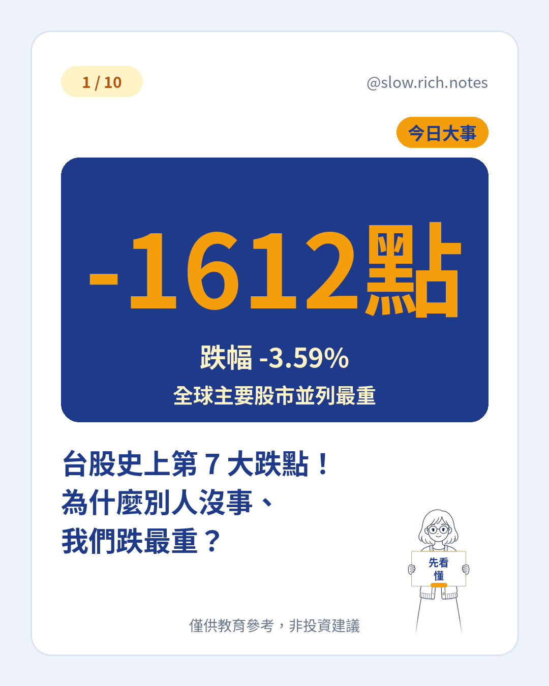

11/3 這天，台股加權指數一路開低走低，收盤跌 1,612.60 點，收在 43,307.54 點，跌幅 3.59%，失守 44,000 點。上市股票有 1,016 家下跌、只有 59 家上漲，這是台股史上第 7 大的單日跌點。
把全球主要股市排一排（截至 11/3 發文時）：台股 -3.59%、韓國 KOSPI -3.59%，兩者並列跌最重，精算後台股只多跌一點點；深證成指 -1.21%、上證 -0.82%，澳洲 ASX200 +0.34%，港股恆生盤中約 +0.25%。日本休市，印度當時尚未收盤。同一天，有的市場幾乎沒事，台韓卻重摔。
為什麼偏偏是台灣和韓國？兩地有個共同點：指數裡科技、半導體公司占的比重非常高。前一晚美股科技股賣壓沉重，再加上美國期中選舉的不確定性，全球資金一緊張，最先賣的往往就是科技股。科技股越多的市場，受傷自然越重。
誰拖累了大盤？權值股幾乎全部收黑：聯發科跌 7.43%、台達電跌 6.27%、鴻海跌 2.19%，台積電也跌 1.5%，收 2,295 元。記憶體、CPO 光通訊族群多檔跌停，塑化類股也重挫 6.13%。大公司一起跌，指數很難撐住。
中小型股更慘：代表中小型股的櫃買指數跌了 6.42%。小型股成交量比較小，有人急著賣時股價容易被壓得更深；熱門題材股也常集中在這裡，之前漲得越快，回頭時往往跌得越快。如果有人用融資買進，下跌時還可能被迫賣出，可以參考融資斷頭是什麼。
「史上第 7 大跌點」聽起來很嚇人，但要分清楚跌點和跌幅。跌點是少了幾點，跌幅是少了百分之幾。指數 1 萬點時跌 1,000 點是 10%，現在 4 萬多點跌 1,612 點是 3.59%。指數基期越高，同樣的跌幅換成點數就越大，所以比較不同時期要看百分比。至於跌多少才叫回檔、修正或空頭，可以看回檔、修正、空頭差在哪。
大跌這天新手可以做的事：先確認緊急預備金夠不夠，定期定額照原本計畫走，檢查自己是不是太集中在某個熱門題材。不該做的事：借錢或融資去攤平、因為恐慌一次全部賣光、急著猜哪裡是底部。新聞裡常提到的法人動向，可以先讀三大法人到底是誰再判斷。
跌最多的，常常是之前最熱門、漲最多的地方；一天的波動不等於長期的方向。剛開始投資的話，可以先免費領取《投資新手入門清單》，把基本功打穩。